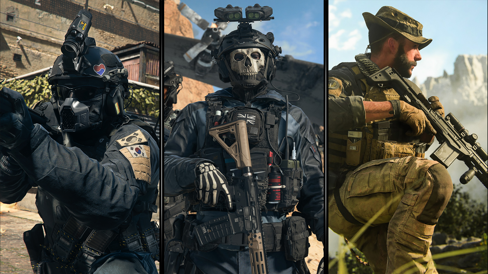

|
A franquia "Call of Duty" é uma série de jogos de tiro em primeira pessoa que teve início em 2003 com um foco na Segunda Guerra Mundial. Com o tempo, a série expandiu-se para incluir jogos ambientados em uma variedade de períodos históricos, bem como em cenários futuristas e de ficção científica. A franquia é conhecida por sua jogabilidade intensa, gráficos impressionantes e narrativas envolventes, além de apresentar modos multijogador online populares. Com várias sub-séries, como "Modern Warfare" e "Black Ops", "Call of Duty" continua a ser uma das séries de jogos mais populares e influentes da indústria dos videogames.

|